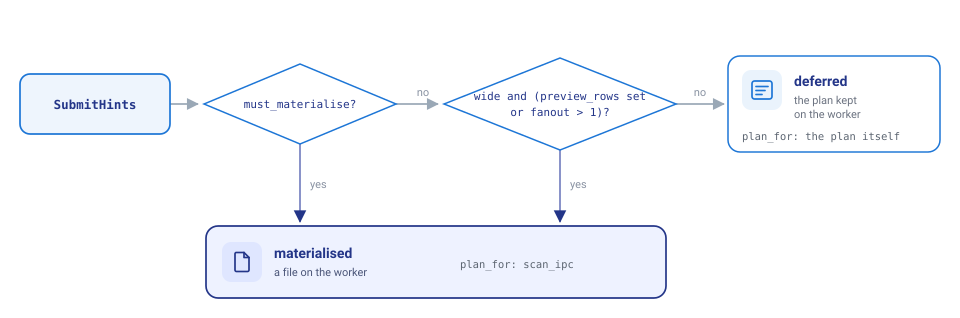
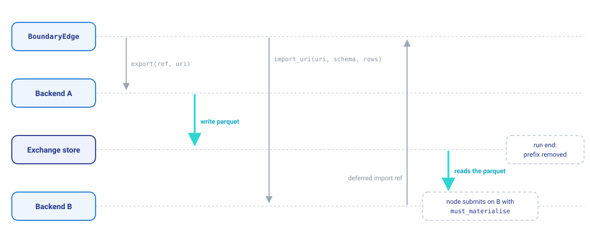
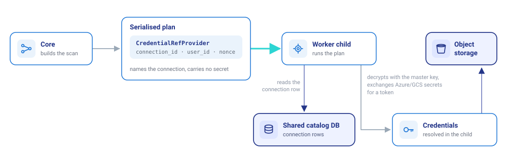

How compute works
This page walks through the code that runs a flow's nodes: how core hands one node to compute, how a run is placed across backends, how results, data and credentials travel, and which files to change for a new operation or a new backend. It is the guided tour; Compute protocol is the design reference with every invariant and the full interface. Where flows run is the same model from the user's side.
One interface
Core talks to compute only through ComputeBackend (flowfile_core/flowfile/execution/protocol.py). A backend is not a service of its own: it is an adapter object inside core's process, WorkerBackend or EmbeddedWorkerBackend, and the worker it talks to is the compute. A result is a ResultRef: the id of the backend that minted it, the node hash, the schema, the row count when known, and a location only that backend reads. Rows reach core only through sample and the sample submit returns inline.
![Core's process holds core, which plans each node, and a ComputeBackend, the adapter core calls: WorkerBackend (ids worker and worker:name) or EmbeddedWorkerBackend (id local). Core sends the backend a plan with SubmitHints and gets back a ResultRef and at most preview_rows rows. The backend reaches the worker over the /v1 routes on HTTP and WebSocket, or by a direct call for the worker embedded in core's process; the worker runs on any host and keeps each result in its own storage, read only through that backend.](../assets/images/architecture/compute-backend-overview.svg)
The rest of the page builds on these rules:
| Rule | Where | Held by |
|---|---|---|
Core holds a ResultRef, never a path; only the backend that minted it reads its location |
execution/protocol.py |
the conformance suite, test_serving_app_ratchet.py |
| One place decides where work runs | execution/registry.py, ExecutionContext |
test_inline_location_branches.py |
| A node its backend cannot run is refused before any node starts | requirements_for, place() |
test_placement.py |
An unreachable backend is a typed ComputeError, never a cache miss; results_exists raises ComputeUnavailable |
execution/errors.py |
test_handshake.py, the conformance suite |
A plan names a stored connection (CredentialRef) and carries no secret; the process that runs it resolves it |
shared/cloud_credential_provider.py |
flowfile_core/tests/flowfile/test_cloud_plan_secrets.py, flowfile_worker/tests/test_plan_credentials.py |
There is one compute implementation: EmbeddedWorkerBackend calls the worker's own route bodies in this process |
execution/backends/embedded.py |
test_embedded_backend.py, test_local_backend.py |
The tests are under flowfile_core/tests/flowfile/execution/ unless a path is given.
The pieces
![The modules of the compute path: flow_graph/execution.py (run_graph, _place_run, BoundaryEdge) calls placement.py, which reads requirements.py, calls the handshake (verify, Verdict), and runs flow_node.py (_do_execute, run_op, release_result), which reads ExecutionContext, which resolves its backend through registry.py; the registry hands out EmbeddedWorkerBackend (id local), which calls the worker's service.py directly, and WorkerBackend (worker and worker:name), which reaches protocol_routes.py and streaming.py over HTTP and WebSocket; service.py holds one body per route and runs jobs through funcs.py, pool.py and spawner.py; the handshake and service.py both import shared/compute_protocol.py.](../assets/images/architecture/compute-module-map.svg)
| File | Role |
|---|---|
execution/protocol.py |
ComputeBackend and its value types: ResultRef, SubmitHints, SubmitResult, OpResult, CredentialRef, the closed OperationKind enum |
execution/registry.py |
Backends by id: local and worker built in, worker:<name> from the compute_backends table, others through the flowfile.compute_backends entry-point group; default_backend_id(); mark_serving() |
execution/context.py |
ExecutionContext(backend_id, parallelism, preview_rows), derived from the flow's settings; current_context(), use_context() |
execution/placement.py |
place(), SingleBackendPolicy, MixedPlacementPolicy, Refusal, Fallback |
flow_node/requirements.py |
requirements_for(): what a node needs from its compute, from its template and settings alone |
flow_data_engine/subprocess_operations/handshake.py |
verify(), verdict_for(), ensure_handshake(): one check per backend per process |
execution/exchange.py |
The exchange store and ExchangeRun, a run's prefix and its removal |
execution/payloads.py |
One frozen dataclass per operation kind |
execution/backends/worker.py |
WorkerBackend: the HTTP and WebSocket client of a worker |
execution/backends/embedded.py |
EmbeddedWorkerBackend: the same worker, called in this process |
flowfile_worker/service.py |
The /v1 route bodies, shared by the routes and the embedded adapter |
shared/compute_protocol.py |
What both sides import: Capabilities, PROTOCOL_VERSION, the wire models |
The flowfile_core/ files are under flowfile_core/flowfile_core/flowfile/.
One worker, two adapters
There is one compute implementation: the worker. Core reaches it in one of two ways, and both end in the same functions in flowfile_worker/service.py.
![One worker, two adapters, both ending in the same service.py functions: in core's process EmbeddedWorkerBackend (local) calls the service.py bodies directly, an HTTPException becoming a typed error, and spawner.in_process decides whether a job runs in this process (a headless run, Python) or in the warm pool or a child (the pip server); WorkerBackend (worker and worker:name) reaches protocol_routes.py in the worker process over /v1 on HTTP and WebSocket, and the worker's service.py bodies run each job in the warm pool or a child.](../assets/images/architecture/one-worker-two-adapters.svg)
EmbeddedWorkerBackend passes the plan as serialize() bytes, so the worker loads it exactly as one sent over the wire, and its references are the worker's references under the id local. The registry's local factory sets flowfile_worker.spawner.in_process in a process that does not serve, so a scheduled run or a script runs each job where the rows are wanted. In a process that serves (registry.mark_serving(), called by main.run), it leaves the flag unset and jobs go to the pool, never the serving process. The pip server's built-in worker is this adapter too (single-file mode); the desktop app and Docker use WorkerBackend.
| Method | Core calls it from | WorkerBackend, protocol on |
EmbeddedWorkerBackend |
|---|---|---|---|
capabilities |
the handshake | GET /v1/capabilities |
service.worker_capabilities |
submit |
FlowNode._submit, bounded reads, handshake probes |
WS /v1/ws/submit, else POST /v1/submit |
service.run_submit |
run_op |
FlowNode.run_op, called by the builders |
POST /v1/ops/{kind}; the Delta writes and viz_session stay on task routes |
the matching service body |
sample, count |
previews, flow_data_engine/bounded.py, the API runner |
GET /v1/results/{id}/sample, /count |
service.sample, service.count |
exists, release |
the cache check, FlowNode.release_result |
HEAD, DELETE /v1/results/{id} |
service.exists, service.release |
plan_for |
composing the next node's plan | no call: decodes location |
no call |
export, import_uri |
BoundaryEdge, artifacts/publish.py |
POST /v1/results/{id}/export, /import |
service.export, service.import_uri |
status, cancel |
FlowNode.cancel |
GET /v1/jobs/{id}, POST /v1/jobs/{id}/cancel |
service.job_status, service.cancel_job |
Every /v1 request carries X-Protocol-Version; a worker answers a different version with 426, which core reads as VersionMismatch. With FLOWFILE_COMPUTE_PROTOCOL off, WorkerBackend uses the task routes instead and core opens the worker's files over the shared disk.
One node, step by step
run_graph places the run, then _execute_stages runs each stage's nodes (up to ExecutionContext.parallelism at once, each thread under a copy of the run's context). For a node that submits a plain Polars plan, FlowNode._do_execute does this. FlowNode and the backend run in core's process; the worker's service.run_submit and the child it starts run in the worker's process, or in core's for EmbeddedWorkerBackend:
![One node, step by step. In core's process, FlowNode runs its cache check (1), builds the plan over its input leaves (2) and calls hints_for (3), then calls submit with the plan, inputs, hints and hash on the backend (4). The backend sends the plan bytes over the worker's /v1 submit, or by a direct call, to service.run_submit, which runs funcs.submit_result in a worker child; the child answers a file or a deferred plan and a sample, run_submit answers a SubmitResult, and the backend answers FlowNode a ResultRef and the sample, so FlowNode sets resulting_data to plan_for(ref) (5).](../assets/images/architecture/node-submit-sequence.svg)
- Cache check. A node with Cache Results on that still holds a stored result under its hash on this backend (
held_result, thenexists) takes it and skips the submit. - Build the plan.
get_resulting_data()runs the node function over its inputs' engines, each built onplan_forof the input's reference, so the function only composes a plan. - Hints.
flow_node/executor.py::hints_fordescribes the plan:must_materialise(Cache Results, or an input that crossed from another backend),wide(not a narrow transform),fanout(the distinct plans among the nodes this run executes that execute the result: a consumer that collects counts once, a deferred one passes on its own count) andpreview_rows. - Submit.
backend.submitruns it under the node's hash; on the worker,service.run_submitrunsfuncs.submit_resultin a child. - Take the result.
_take_resultkeeps theResultRefonresults.result_ref, setsresulting_datato an engine overplan_for(ref)with the schema the reference carries, and the preview from the inline sample.
The next node's function composes on plan_for(ref), a leaf valid only on that backend, and sends the composed plan back to the same backend. Core never collects a leaf; test_serving_app_ratchet.py fails on a .collect( over a plan_for result in core or the pip server's app.
The worker's service._materialise reads the hints:

A join, group by, sort or pivot previewed in Development mode is therefore stored, and a chain of narrow nodes reaches the worker as one composed plan and runs as one Polars query. A wide result that more than one plan of the run executes (fanout > 1) is stored in either mode, written once instead of computed again inside each of them; core counts only the plans the run at hand executes, so a single-node fetch counts none, and a Performance run with no writer below a node counts none either.
Plans and operations
A node whose work is a Polars plan uses submit. Anything that needs Flowfile code on the compute, reads a source whose result is not deterministic, or writes, is an OperationKind run through FlowNode.run_op(backend, kind, op_payload(payload), job_id=...). Each kind takes one frozen dataclass from execution/payloads.py, and run_op answers an OpResult: named ResultRefs plus metadata (Kafka offsets, a model's digest, a Delta write's version and counts).
| Family | Kinds |
|---|---|
| Reads | database_read, kafka_read, google_analytics_read, rest_api_read, file_read (Excel, Avro, Arrow streams, non-UTF-8 CSV) |
| Writes | file_write, database_write, cloud_write, delta_write, delta_merge, delta_scd2 |
| Transforms | fuzzy_join, random_split, custom_node, polars_code, sql_query |
| Models | ml_train (answers the model as a kind="blob" ref), ml_apply |
| Other | viz_session (the Explore Data node's charts) |
polars_code and sql_query mean core never executes a Polars Code node's code or translates a SQL Query node's statement: the backend that holds the inputs runs it once and answers a reference with the resulting schema. The designer's schema prediction is the same operation over empty frames of the predicted input schemas.
Placing a run
With the protocol on, FlowGraph._place_run decides every node's backend before any node starts:
![Placing a run: without an exchange store SingleBackendPolicy puts every node on the run's backend (Google Analytics pinned to the worker), with one MixedPlacementPolicy follows each node's execution_location; handshake.verdict_for reads each backend named; a backend refused whole or an unknown id refuses every node there, an unreachable one keeps its nodes assigned unchecked to fail with ComputeUnavailable when they run, and for an ok one place() compares requirements_for(node) with the offered capabilities and what is absent; a node that fits is assigned, one that does not is refused under the single policy and, under the mixed policy, falls back to the default backend when that fits, else is refused with both reasons; assignments give the boundaries, each a BoundaryEdge priced against FLOWFILE_EXCHANGE_MAX_ROWS, and any refusal stops the run before a node starts.](../assets/images/architecture/placing-a-run.svg)
requirements_for reads a node's template and settings, with the flow's parameters resolved, and nothing else: the operation it runs, the schemes it reads and writes (file, s3, az, gs, http, https), the plugins its expressions load, the stored connections it names, whether its plan may carry a Python function, and whether it runs on a notebook kernel. place compares those with the Capabilities the backend's verdict offers. file is offered only to a worker that sees core's disk: the embedded worker, the built-in worker at its unconfigured address, a configured row marked shares_core_disk, or a worker started with FLOWFILE_WORKER_LOCAL_FILES=1.
GET /flow/placement answers FlowGraph.preview_placement() without running, which the designer's node badges read; the run report carries boundaries, which the canvas draws on its edges.
The handshake
handshake.verify(backend) runs through the backend's own interface, the same for every kind: capabilities() compared with local_capabilities(), then one probe plan per expression plugin and one carrying a trivial Python function, each run as an ordinary job (submit with a one-row preview, sample, release). The Verdict is cached per backend; it is checked on first use in a process and again after a call could not reach the backend.
| Field | Effect of a difference |
|---|---|
protocol_version, polars_version, polars_runtime |
Refuses the backend whole (VersionMismatch) |
plugins (by version and by probe) |
Absent from what the backend offers; only nodes that use the plugin are refused there |
python_version |
Listed in differences; the Python probe decides whether formula nodes are refused there |
app_version, platform, plugin_libs |
Reported, not compared |
PROTOCOL_VERSION is the worker contract. shared/tests/test_worker_contract.py fingerprints every request and answer shape against worker_contract.json and fails on a change until the number is bumped and the pin rewritten with python shared/tests/test_worker_contract.py. A new operation kind passes without a bump, since a worker that does not declare it is refused only that kind's nodes.
Crossing between backends
Under the mixed policy each boundary becomes a BoundaryEdge (flow_graph/execution.py), set on the importing node as _boundary_inputs:

BoundaryEdge.cross() runs when the importing node first reads that input. The URI is <prefix><from>-<handle>-<to>.parquet under the run's prefix <uri>/<flow id>/<run id>/, and the node composes on plan_for of the import on its own backend. The importing node is submitted with must_materialise, and FlowNode._store_other_outputs stores its other outputs beside the result, so nothing refers to the run's prefix once run_graph removes it. The store's connection is the deployment's: an administrator's cloud connection of the configured name, looked up once per run.
Credentials
A plan names a stored connection and carries no secret:

CloudStorageReader.get_read_credentials and CatalogStorageTarget.scan_kwargs attach the provider; the worker resolves it where the plan runs. A worker on another host therefore needs core's catalog database (the shared PostgreSQL) and the same master key, and connections that use the host's identity (aws-cli, iam_role, env_vars, managed_identity) authenticate as the worker host. A read that names a connection the catalog does not hold for the user it runs as is refused, never resolved in core.
Who holds and releases results
A node owns every reference it minted: results.result_ref, the outputs it stored beside it (_stored_outputs) and its operations' outputs (_operation_refs). FlowNode.release_result releases them together, on a rerun under another hash or on another backend, on FlowGraph.delete_node, on close_flow, and when the node fails after storing part of its outputs. A release that fails is logged and the reference dropped, so a close always completes. The worker's age sweep (CACHE_EXPIRATION_TIME, 24 hours) is the backstop for a core that died, not how results are meant to go.
Changing the code
A node type that submits a plain plan needs no protocol work. Make sure requirements_for claims what it reads and writes and the plugins it loads, or placement sends it to a backend that cannot run it.
A new operation kind touches, in order (the sql_query kind follows this path end to end):
OperationKindinexecution/protocol.pyand a payload dataclass inexecution/payloads.py.- The builder in
flow_graph/builders/, callingnode.run_op(current_context(graph).backend, ...)with no location branch. flow_node/requirements.py, so placement knows the node needs the kind.- The worker: the child function in
funcs.py, the body inservice.py(and the kind inservice.OPERATIONS), the route inprotocol_routes.py, andpool.pyif it may run in a pooled child. WorkerBackend.run_opandEmbeddedWorkerBackend.run_op.shared/tests/worker_contract.json, regenerated withpython shared/tests/test_worker_contract.py.- Tests: the worker's
test_protocol_ops.py, core'stest_placement.pyandtest_op_payloads.py.
A new backend implements ComputeBackend, declares honest Capabilities (operations, schemes, credential_resolution), registers a factory under the flowfile.compute_backends entry-point group, and passes flowfile_core/tests/flowfile/execution/conformance/. A compute that speaks the worker's /v1 wire needs no code in core: add it as a worker:<name> row and the handshake reads what it declares.
The ratchets that keep the design in place:
| Rule | Test |
|---|---|
Only configs/settings.py and execution/registry.py read WORKER_URL or OFFLOAD_TO_WORKER; no inline execution_location compare |
test_inline_location_branches.py |
No .collect( over a plan_for leaf in core or the pip server's app |
test_serving_app_ratchet.py |
| Every backend keeps the invariants | conformance/ |
The wire shape is pinned to PROTOCOL_VERSION |
shared/tests/test_worker_contract.py |
poetry run pytest flowfile_core/tests/flowfile/execution
poetry run pytest shared/tests/test_worker_contract.py flowfile_worker/tests/test_protocol_routes.py flowfile_worker/tests/test_protocol_ops.py
poetry run pytest tests/remote_worker -m "not docker_integration"
The last runs core and a worker on storage directories of their own, so a read of a worker's file from core fails there; -m docker_integration runs the same with no shared volume at all (docker-compose.remote-worker.yml).